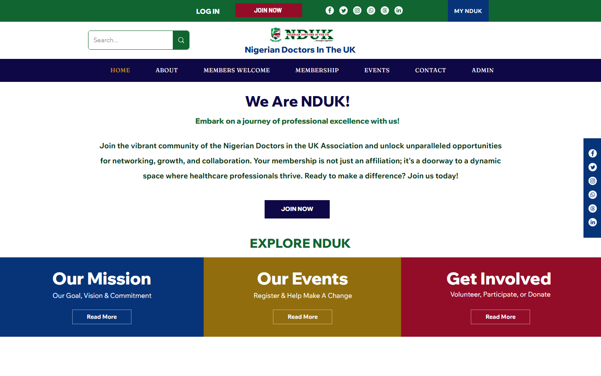

Membership platform development with custom features: registration flows, automated PDF document generation, CMS integrations, and ongoing maintenance.

Ongoing development work for NDUK's membership platform, including custom features built on top of Wix using Velo: membership registration flows, automated PDF generation for member documents, CMS and automation fixes, and platform maintenance.